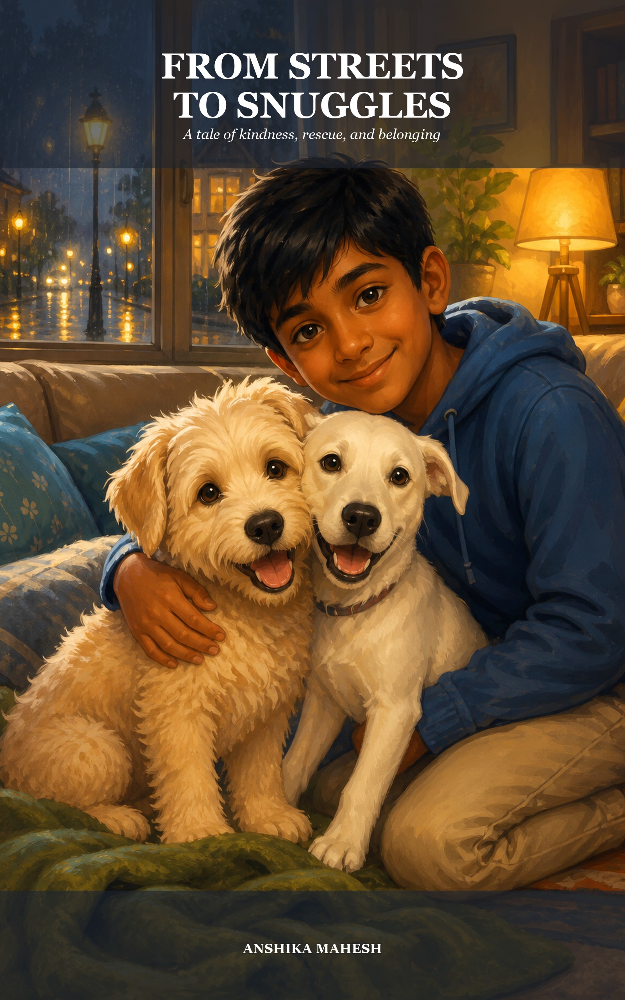
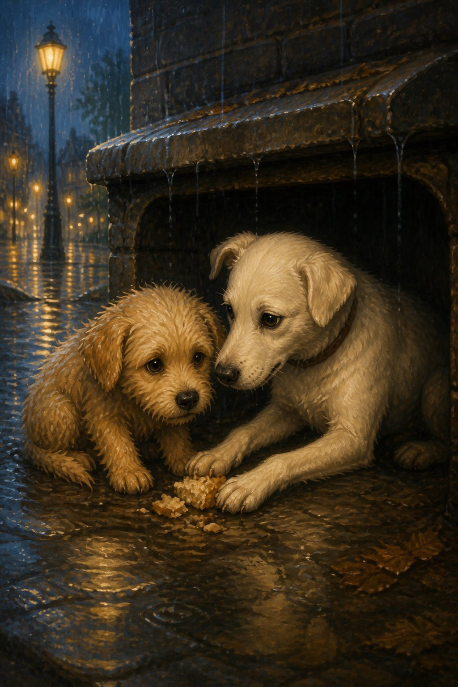

From Streets to SnugglesA tale of kindness, rescue, and belonging
In a heartwarming tale of love, friendship, and second chances, Fluffy and Snowy find their way from the harsh streets to a loving home — thanks to one kind boy named Sam.
25 Chapters · sample of 1–2
- A Lonely BeginningBundle, a young puppy, struggles to survive alone on the streets.
- A New FriendA kind stray dog offers Bundle food and shelter from the rain.
- The Function HallThe two dogs find leftover food at a party but are spotted by a boy.
- A New HomeSam takes Bundle and his friend home, offering them safety.
- Settling InThe pups get their first bath, food, and a walk in their new home.
- A New ResponsibilitySam's parents let him keep the dogs, but only if he takes good care of them.
- Shopping for the DogsSam excitedly buys toys, beds, and treats for his new pets.
- A Trip to the VetThe dogs are nervous about their first visit to the vet.
- The Vet's OfficeThey meet other animals and get their check-ups.
- The Vet VisitThe vet gives them injections, but they barely notice!
- Vaccination DayA few treats make the visit easier, and the pups start learning tricks.
- Meeting RioThe pups meet Rio, a friendly dog, and make a new friend.
- A Happy HomeLife with Sam feels warm, safe, and full of love.
- Thunderstorms and VisitorsThe dogs fear thunder but become loved by visitors.
- Reunion with RioThe pups reunite with Rio and learn fun new tricks.
- The HikeA fun but exhausting adventure picnic at the top.
- Missing SamThe dogs miss Sam when he's at school, but a trainer helps keep them busy.
- Show and TellSam is excited to showcase his pets at school.
- The Big DayThe pups impress everyone with their tricks at the event.
- Learning New TricksThe dogs continue training and bond even more with Sam.
- A Holiday in GoaThe pups enjoy a beach vacation and their first swim!
- New Year CelebrationA festive time filled with joy, a play, and delicious food.
- Unexpected Reunion!Bundle meets his first owner in a surprising twist.
- Bundle's TaleThe pieces of Bundle's past finally come together.
- A Perfect EndingThe pups are home for good, dreaming of more adventures ahead.
A Lonely Beginning
Bundle was all alone on the street. The road was a damp and dirty place to live, and Bundle didn't like it one bit. But where else could a puppy as young as one month go?
He had been separated from his mother when he was just four weeks old. He missed her terribly and to make matters worse, it was difficult to find food and water on his own.
As he wandered the streets looking for shelter, the sky turned gray. It looked like it was going to rain, so he needed to find a safe place—and fast. He ran everywhere, looking for a hole or a bus stop to hide in, but there wasn't any shelter around.
Suddenly, the clouds opened up, and it began to rain heavily.
A New Friend

Poor Bundle! He hated getting wet in the rain. Just then, another dog saw him shivering and took pity on him. She decided to help. She walked toward him and spoke gently.
"Hello, I am a street dog like you," she said. "If you want, I can help you stay dry."
Until then, Bundle had never spoken to any other dog because he was very shy and timid.
"Ok," he whispered. "Thank you for helping me."
She led him to a sheltered gutter and gave him some leftover food she had saved, just in case of an emergency. Bundle was very grateful and thanked her immensely.
When the rain finally stopped, the two dogs stepped out together to try and find some more food to eat.
Continue on Amazon
This is a free Look Inside — the cover, the chapter list, and the first two chapters. The rest of From Streets to Snuggles is on Amazon Kindle and in print.
About the Book
When Sam, a kind-hearted young boy, rescues Fluffy, their bond grows stronger with each passing day. They embark on countless adventures—learning tricks, visiting the vet, making new friends, and even taking a holiday to Goa!
Perfect for animal lovers and young readers, this touching story reminds us that sometimes, the greatest journeys begin with a single act of kindness.
Copyright © 2025 by Anshika Mahesh. Cover design by Anshika Mahesh.